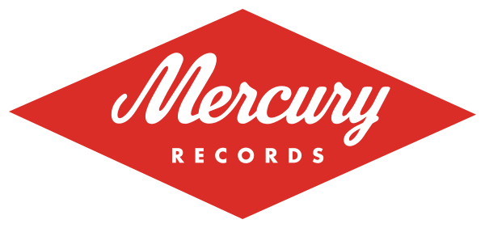

GOOD 뮤직 GOOD Music
GOOD 뮤직(GOOD Music)은 2004년 카니예 웨스트(Kanye West)가 설립한 미국의 레코드 레이블이다. 아일랜드 데프 잼 뮤직 그룹 산하 레이블이며 본사는 뉴욕이다.
최종 업데이트
GOOD 뮤직은 어떤 브랜드인가
GOOD 뮤직은 미국의 레코드 레이블로 본사는 뉴욕이다. 'G.O.O.D.'는 'Getting Out Our Dreams'를 의미한다.
아일랜드 데프 잼 뮤직 그룹(The Island Def Jam Music Group) 산하 레이블이며, 미국 내 배급사는 데프 잼 레코딩즈(Def Jam Recordings), 미국 외 배급사는 머큐리 레코즈(Mercury Records)이다. 소속 가수와 프로듀서로 존 레전드(John Legend), 빅 션(Big Sean), 푸샤 티(Pusha T), 2 Chainz, Migos 등이 있다.
창업자 카니예 웨스트도 프로듀서로 이름을 올리고 있다. 2012년에는 레이블 컴필레이션 음반 Cruel Summer를 발매했다.
GOOD 뮤직은 어떻게 시작되고 성장했나
GOOD 뮤직은 2004년 카니예 웨스트(Kanye West)가 설립했다. 처음으로 음반 제작을 맡은 가수는 커먼(Common)과 존 레전드(John Legend)이며, 두 사람은 그래미 어워드(Grammy Award) 일곱 부문에 노미네이트되어 이 중 네 부문을 수상했다.
2005년 콜럼비아 레코즈(Columbia Records)와 계약했고, 2007년에는 빅 션(Big Sean)과 키드 커디(Kid Cudi)와 계약했다. 2008년 미스터 허드슨(Mr.
Hudson)과 계약했으며, 2010년에는 푸샤 티(Pusha T), 모스 데프(Mos Def), 다니엘 야즈디(Daniel Yazdi), 사하 더 프린스(Cyhi the Prynce)와 계약했다. 같은 해 토니 윌리엄스(Tony Williams)가 레이블을 떠났다.
GOOD 뮤직의 브랜드 아이덴티티는 무엇인가
카니예 웨스트가 2004년 설립한 뉴욕 기반의 레코드 레이블로, 'Getting Out Our Dreams'를 이름의 뜻으로 삼는다.
GOOD 뮤직의 대표 제품과 서비스는 무엇인가
2011년 빅 션의 [Finally Famous가 아일랜드 데프 잼 뮤직 그룹 배급으로 처음 발매되었다. 2012년에는 레이블 컴필레이션 음반 [Cruel Summer를 발매했다.
이 음반은 같은 제목의 단편 영화
음반은 9월 4일 발매 예정이었으나 2012년 9월 18일로 미뤄졌다.
GOOD 뮤직은 지금 어떤 상태인가
현재 아일랜드 데프 잼 뮤직 그룹 산하 레이블로, 미국 내 배급은 데프 잼 레코딩즈가, 미국 외 배급은 머큐리 레코즈가 맡고 있다. 소속 가수로 존 레전드, 빅 션, 푸샤 티, 2 Chainz, Desiigner, Tyga, Migos 등이 있고, 프로듀서로 Hudson Mohawke, Jeff Bhasker, No I.D., Travi$ Scott 등이 있다.
자주 묻는 질문
GOOD 뮤직는 어느 나라 브랜드인가요?
GOOD 뮤직는 미국의 미디어·엔터테인먼트 브랜드입니다.
GOOD 뮤직는 언제 설립되었나요?
GOOD 뮤직는 2004년 설립되었습니다.
GOOD 뮤직의 브랜드 아이덴티티는 무엇인가요?
카니예 웨스트가 2004년 설립한 뉴욕 기반의 레코드 레이블로, 'Getting Out Our Dreams'를 이름의 뜻으로 삼는다.
GOOD 뮤직의 대표 제품은 무엇인가요?
2011년 빅 션의 [Finally Famous]가 아일랜드 데프 잼 뮤직 그룹 배급으로 처음 발매되었다.
GOOD 뮤직는 어느 기업이 소유하고 있나요?
현재 아일랜드 데프 잼 뮤직 그룹 산하 레이블로, 미국 내 배급은 데프 잼 레코딩즈가, 미국 외 배급은 머큐리 레코즈가 맡고 있다.
GOOD 뮤직의 창업자는 누구인가요?
GOOD 뮤직의 창업자는 카니예 웨스트입니다(위키데이터 기준).
GOOD 뮤직의 본사는 어디에 있나요?
GOOD 뮤직의 본사는 뉴욕에 있습니다(위키데이터 기준).
출처와 검증
GOOD 뮤직 관련 참고: 공식 웹사이트 · 위키데이터 Q1142456 · 한국어 위키백과 · 영어 위키백과. 브랜드명은 한글과 원어를 함께 표기하되 데이터에 없는 표기는 만들지 않습니다. 기원 국가·설립연도는 검수된 정의문에서 확인된 값을 우선하고, 없을 때만 공식 웹사이트 URL이 일치하는 위키데이터 개체의 값을 씁니다. 탄생일의 월·일은 위키데이터, 위키백과 정보상자, 본문 가운데 같은 연월로 확인되는 값만 싣고, 출처끼리 다르면 싣지 않습니다. 위키데이터 값은 2026-11-15 기준입니다.
3월에 태어난 브랜드
함께 읽을 브랜드
 유니버설 뮤직 그룹Universal Music Group미디어·엔터테인먼트
유니버설 뮤직 그룹Universal Music Group미디어·엔터테인먼트 배드 보이 레코드Bad Boy Records미디어·엔터테인먼트
배드 보이 레코드Bad Boy Records미디어·엔터테인먼트 워너 레코드Warner Records Inc.미디어·엔터테인먼트트럼프 미디어 & 테크놀로지 그룹Trump Media & Technology Group미디어·엔터테인먼트
워너 레코드Warner Records Inc.미디어·엔터테인먼트트럼프 미디어 & 테크놀로지 그룹Trump Media & Technology Group미디어·엔터테인먼트 아메리칸 레코딩스American Recordings미디어·엔터테인먼트
아메리칸 레코딩스American Recordings미디어·엔터테인먼트 컬럼비아 레코드Columbia Records미디어·엔터테인먼트
컬럼비아 레코드Columbia Records미디어·엔터테인먼트
머큐리 레코드Mercury Records미디어·엔터테인먼트